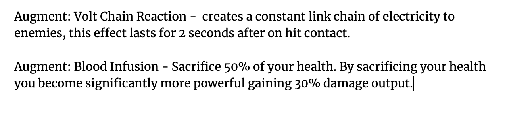
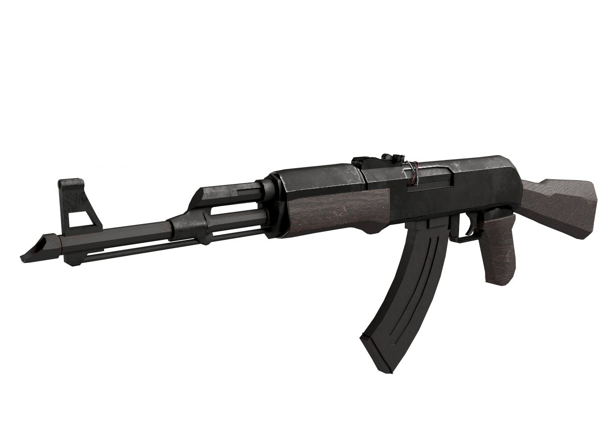
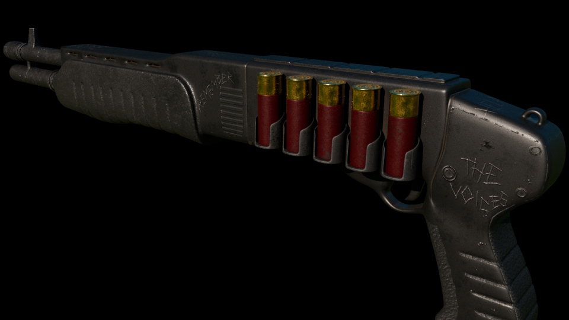
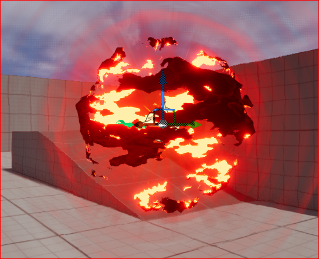
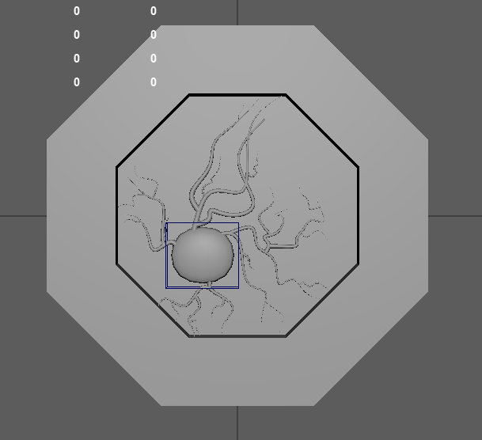
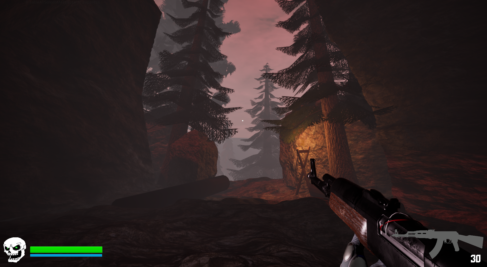

The Ninth Circle is a first-person shooter, action roguelike inspired by games like Bullets-Per-Minute and DOOM. The goal of this game is to offer players a 3D fast-paced roguelike formatted for a first-person shooter experience, a game that no one in the industry been successful at developing yet. Our target audience is composed of roguelike players who also enjoy the fast-paced style of FPS games.
This project marked the first time I lead both a project and the engineering team. Collaborating with a team of 20 talented artists, designers, and programmers, I assumed responsibility for almost all the programmatic and infrastructural aspects of the game. Additionally, I led the engineering and design teams in bringing my vision for The Ninth Circle to life. This game has been the most beneficial experience in my career as a game developer, providing invaluable insights into version control systems (VCS) and Unreal 5 throughout the game's development lifecycle.
Core Mechanics
From the start of the design, we knew we wanted to incorporate a super jump and a dash. Allowing our players to utilize verticality at different points in the level would give them the chance to escape the hordes of enemies that pursue them. Beyond the basic mechanics of firing a weapon, moving, and executing a basic jump, our choice of variance in gameplay would rely on two different principles: the augmentation of a mechanic or the replacement of it. This decision revolved around the idea that the synergies players would come up with should align with the playstyle of their core mechanics. Additionally, it introduced the first important element of roguelike/roguelite games, which is the concept of give-and-take.
Progression in roguelikes is always a challenging aspect to address; you don't want the player to feel overly powerful, yet you don't want them to sense a lack of improvement. With this mindset, we devised two parts of our core mechanic. The first involves progression through a system of perks, offering passive bonuses. The second part includes a system of augments, enhancing or replacing existing mechanics in the game, such as jump and dash, with varied versions that provide a stimulating effect. This encourages players to decide what kind of synergy they want to achieve. Once we agreed on how these systems would work, and after establishing the core mechanics of movement and combat, we shifted our focus to enhancing our weapons.
Weapon Development
All models in our games, aside from textures and materials, are original, meticulously crafted, and themed to align with the horror aspect of the game. We went through two different versions of combat before settling on the system that would persist throughout our development stage.
In the initial stage of weapon development, our approach involved creating bullet objects and having the hit detection and combat system based on physics. The game would wait for the bullet to collide with an enemy hitbox before applying on-hit effects. After a few additions, we realized that this system would eventually fail our vision for an extremely fast-paced roguelike environment. The existing weapon system was too slow, resource-intensive, and not scalable.
Our solution involved replacing the physics-based hit software with a vector-based one using the Line Trace component provided by Unreal. Once incorporated, we added a more realistic visual effect of firing a weapon by creating a socket at the muzzle of the weapon. This became the origin point for the audio track of the bullet itself, along with a bullet tracer to provide a feedback system to the player, indicating where their bullets are hitting.
Once our system was put into place, and tested for any issues, we included our original weapon models and tracer effects to the game.
The last change to the overall infrastructure of our weapons involved creating tools and templates to enhance the speed and functionality of newer weapons. I developed a series of template components and actor objects in the game to simplify the process of developing new weapons. This allowed our designers and programmers to focus solely on the specific method of weapon firing, reload, and weapon-specific attributes. Once this tool was implemented, we efficiently developed our second weapon and seamlessly integrated it into the game in a short period.
After the development and testing of these weapons, the next step was to create the first progression system for players—introducing the perks.
Perk Component
The perk system development proved particularly intriguing as we reached a crucial point in gameplay balancing. Our goal was to enhance the player's basic attributes, such as movement speed, magazine size, and weapon damage. The architecture of the perk system involved spawning an actor into the game once the room was considered complete (all enemies dead). This spawned actor had a target component, and when picked up by the player, it recalculated one of the mentioned basic attributes, attaching it to the perk container managed by the main character's blueprints.
By incorporating a component to handle the perk system on the player's character, we unlocked two vital elements of our gameplay experience. The first was progression, and the second, arguably more critical, was a perk capacity. Allowing the player to receive and hold endless perks would risk making them invulnerable in basic room encounters. As we developed the perk system, we concurrently focused on perfecting our ideal level for the players.
Level Design
Crafting the level design for The Ninth Circle posed a significant challenge. Currently, few 3D roguelike games exist, and those that do seldom achieve notable recognition or popularity compared to renowned titles like Hades and The Binding of Isaac. In our development of levels, we attempted to find the formula for 3D level design within the roguelike genre. This endeavor involved numerous iterations, each a separate learning experience, before finally arriving at a style harmonizing with the mechanics we aimed to serve to players.
The first iteration, characterized by a rural landscape with minimal vertical elements, taught us the importance of augmenting the level's size and incorporating more foliage. This adjustment aimed to align the pace of our game with the expansive environment, avoiding scenarios where players felt trapped in corners, fending off relentless hordes.
The second iteration introduced an expanded layout tailored to accommodate super jumps. However, an unforeseen challenge emerged as the cooldown mechanism designed to balance the super jump proved to be overly restrictive. Faced with this dilemma, we confronted two options: reduce the cooldown or revisit the level design to provide players with more escape routes and strategic choices.
In the final iteration, we achieved the optimal fusion of design elements. The level now boasted diverse heights, interspersed small buildings, and a prominent monolithic structure visible throughout the map. These features not only prevented players from feeling cornered but also guided their attention to strategic areas. The monolithic structure, in particular, became a beacon for players, signaling zones where their movement tools could be leveraged to outmaneuver hordes and create essential breathing space for strategic engagements.
The final stage of level design was bringing our atmosphere to life. By creating a different colored ambient light, texturing our foliage, trees and generating models for the smaller shacks and monolithic structures, we were able to start telling a story dynamically from within our game. The addition of VFX to our levels improved the immersiveness of the game, while also promoting the overarching theme of it.
Enemy Behavior
In the initial stages, our approach to enemy behavior scripting in The Ninth Circle embraced a concept commonly found in systemic games. Rather than developing an array of distinct enemies for a single room encounter, we focused on a single enemy that could be scaled to introduce various stimuli upon the player taking damage. When players confronted this enemy, its visual aspects provided cues about the potential effects of an attack. This strategy allowed us to create a simple yet versatile chase-and-attack enemy. The diversity in gameplay arose from the stimuli itself, prompting players to allocate resources strategically to counter the potential impact of different enemy types. This approach also provided an opportunity to enhance our visual effects, creating graphically beautiful enemies that posed varying levels of threat.
Much like similar games in the genre, we wanted to come up with a set of bosses that had their own intrinsic behvaiors. Our thematic choice centered around the concept of hell, with the bosses embodying the 7 deadly sins, each with mechanics tailored to their respective meanings. The first boss introduced to the game was Wrath, representing the vengeful and merciless sin. The intricacy of Wrath's mechanics derived from a 2-phase system. In phase 1, he focused on employing his arm cannon to launch high-powered projectiles capable of significantly impacting the player's health. Phase 2 initiated once the boss sustained sufficient damage, causing his arm cannon to explode and shroud the entire level in a cloud of smoke until his defeat. The only cues to anticipate his movements were the glow emanating from his armor, eyes, and sword. Upon vanquishing Wrath, players were rewarded with a high-powered incentive capable of altering and enhancing their build synergies, potentially shifting the trajectory of their gameplay experience.
UI Development
UI was a simpler task, but the development of the infrastructure was crucial. Our system propagation from the character to the visual illustrated to the player needed to be made as seamless as possible, we could not have it lag or hang at any point, but we also had to keep in mind that screen real estate in a game like this was extremely important. Too much clutter could over stimulate the player and end up confusing them rather than help. Our UI currently displays the player health, ammunition remaining in the magazine, a crosshair and the cooldown of the super jump.
Procedural Generation with Level Design
Procedural Generation is the crux of any roguelike game, the basis of infinite replayability stems from the randomness of the gameplay and the variance of runs. As such, the procedural generation needed to fit the style of gameplay, however it became clear to us even before we started to development that procedural generation of the level itself was going to be impossible. There were too many elements in our game to add before we could even think about the randomness of level art and shape; we simply did not have the time or resources to embark on such a program. We came up with the idea that if we provided the same levels to the player and varied certain aspects of the levels like spawn location of the player and enemies, weather effects and hazards on the level, we could create the feeling of randomness. This decision ended up working in our favor, players would create some familiarity with the levels, but they would be different enough that the routes and combat would be slightly different between each room.
The procedural generation code, written purely in C++, would handle the backend decision making for enough aspects of the game that would create this idea of seaming randomness. Our procedural generator would define how many enemies would spawn where the rate of spawning and position of spawns would be handled at runtime of the level itself. The reward type that would spawn upon encounter completion, this would effectively allow players to decide what kind of reward they need to round out their build before reaching the boss. It would also pick the reward itself from a set of pre-existing object types in the game. Depending on the reward type, the reward spawner would spawn either a random perk, weapon or augment to the players. The final aspect it would handle would be the level to pick from our premade list, and the spawn location in that level. This was a decision that was given to the player, as it acted as our method of providing randomness to our gameplay.